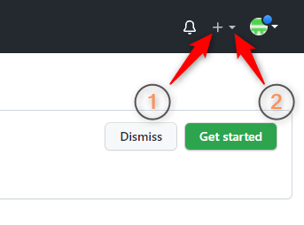
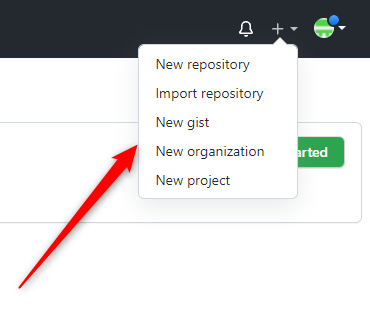

Наша следующая кнопка – Add New. Она позволит вам быстро добавить в ваш аккаунт
ХУЙ-ЗНАЕТ-ЧТО-ПРИДУМАЙ-ЧТО!
Но перед тем, как узнать, что именно мы можем добавить в наш аккаунт, давайте повнимательнее присмотримся к тому, как эта кнопка выглядит:
На скрине выше, вы можете видеть, что кнопка состоит из двух иконок:
В общем, куда бы вы не нажали в районе плюсика, вы увидите вот такое контекстное меню:
которое позволит вам выполнить следующие действия:
Но поскольку целью данного упражнения является просто «пялиться на кнопки глазами», а не сделать хоть что-нибудь полезное, то мы, увидев всплывающее меню «плюсика», временно с ним прощаемся и переходим к следующей, самой главной кнопке!